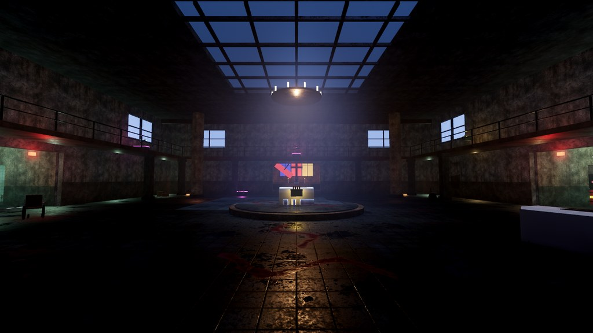
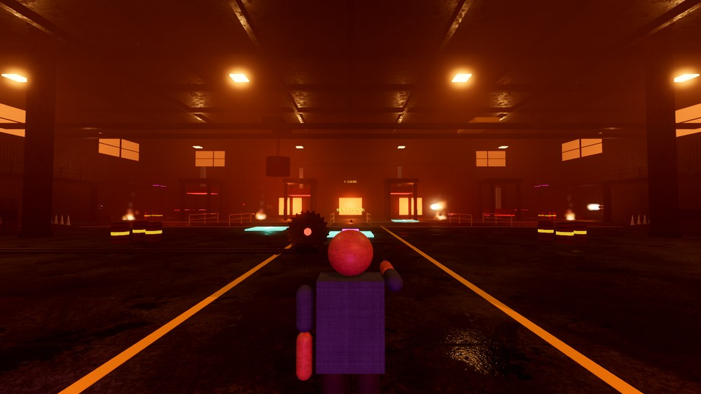
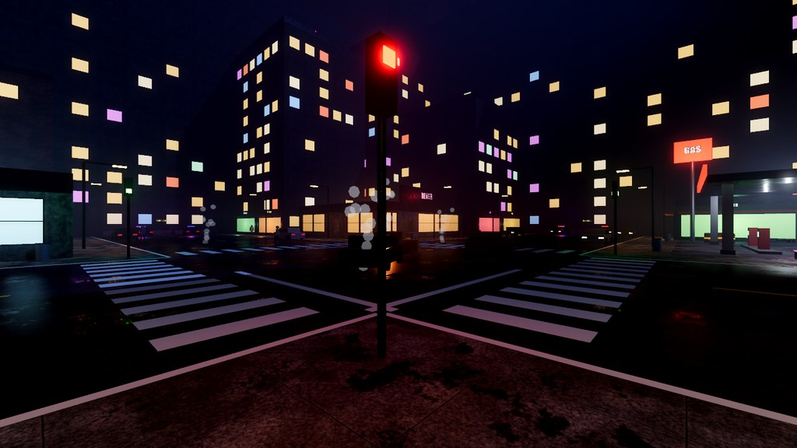
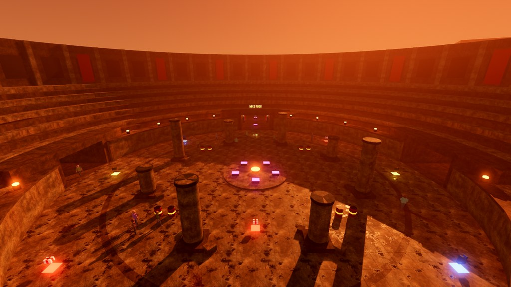
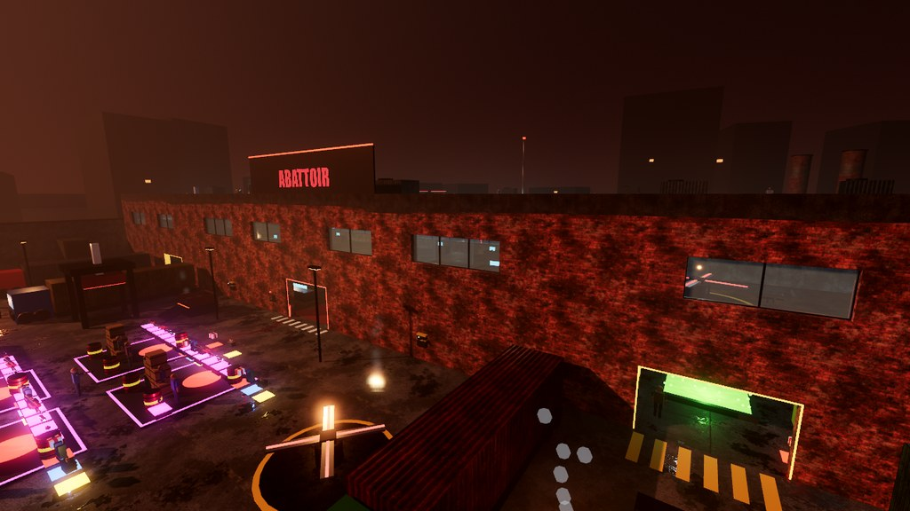

Ragdoll-физика
Ragdoll physics
Каждое тело — настоящая физическая модель на Jolt: падения, удары, разрывы и расчленение.
Every body is a real Jolt physics model: falls, impacts, tearing and dismemberment.

Gore-песочница с ragdoll-физикой, ловушками, динамической кровью и ботами. Выживай, экспериментируй, ломай.
A gore sandbox with ragdoll physics, traps, dynamic blood and bots. Survive, experiment, break things.
99d823a7ec625f0ef597936e9e5ebab0b8c88821d599eba4c1c6f27f1c0a08f9
Бесплатно · Early Access · установщик пока без цифровой подписи (см. «Как установить»)Free · Early Access · the installer is not code-signed yet (see “How to install”)
18+ Игра содержит жестокое насилие и кровь. Только для взрослых.Contains graphic violence and gore. Adults only.
Каждое тело — настоящая физическая модель на Jolt: падения, удары, разрывы и расчленение.
Every body is a real Jolt physics model: falls, impacts, tearing and dismemberment.
Брызги летят по траектории удара, оставляют следы и лужи. Не исчезает — или настрой сам.
Splatter follows the hit, leaves trails and pools. Persistent, or configurable.
Пилы, крюки и механизмы, которые можно испытывать на ботах — и на себе.
Saws, hooks and contraptions to test on bots — and on yourself.
NPC ходят по навигационной сетке, реагируют на выстрелы и ловушки.
NPCs navigate the map and react to gunfire and traps.
У каждого режима своя детальная карта: психбольница, литейный цех с лавой, ночной город, колизей и бойня.
Every mode has its own detailed map: an asylum, a lava foundry, a night city, a colosseum and the abattoir.
Survival — волны врагов. Trap challenge — ловушки. Rampage — погром в городе. Boss Rush — боссы один за другим. Sandbox — делай что хочешь.
Survival — waves of enemies. Trap challenge — traps. Rampage — mayhem in the city. Boss Rush — one boss after another. Sandbox — do whatever you like.
Potato, Low, Medium, High и Ultra — от слабых ноутбуков до максимального качества. Плюс Custom с настройками, как в CS2.
Potato, Low, Medium, High and Ultra — from weak laptops to maximum quality, plus a CS2-style Custom mode.
Настрой прицел и курсор как в CS2 с живым предпросмотром. Новое меню в похожем стиле, но своё.
Tune your crosshair and cursor like in CS2 with a live preview. A redesigned menu in a similar spirit, but our own.
Тёмно-красная, как в жизни: десятки вариантов брызг и следов и новая физика капель.
Dark and realistic: dozens of splatter and trail variants and new droplet physics.
Тесак, бензопила, ракетомёт, огнемёт, гранаты и «граб»-инструмент, чтобы таскать и швырять всё подряд.
Cleaver, chainsaw, rocket launcher, flamethrower, grenades and a grab tool for dragging and throwing anything.
Награды за жестокую изобретательность и выживание.
Rewards for cruel ingenuity and survival.
Текстуры 4K, звуки и музыка генерируются процедурно — без сторонних ассетов.
4K textures, sounds and music are generated procedurally — no third-party assets.





Файл CodeSyntax_Setup.exe — кнопка «Скачать для Windows» выше.
The CodeSyntax_Setup.exe file — use the “Download for Windows” button above.
Установщик сам скачает отдельные части игры, проверит каждую по SHA-256 и соберёт игру. Godot устанавливать не нужно.
The installer downloads the separate game part files, checks each one against its SHA-256 and assembles the game. You don’t need Godot.
Используйте ярлык «CodeSyntax - People Die».
Use the “CodeSyntax - People Die” shortcut.
Windows SmartScreen. Установщик пока без цифровой подписи, поэтому Windows может показать предупреждение. Нажмите «Подробнее» → «Выполнить в любом случае». Подлинность файла можно проверить по SHA-256 выше.
Windows SmartScreen. The installer is not code-signed yet, so Windows may show a warning. Click “More info” → “Run anyway”. You can verify the file with the SHA-256 above.
| МинимумMinimum | РекомендуетсяRecommended | |
|---|---|---|
| ОСOS | Windows 10 / 11, 64-bit | |
| ВидеокартаGPU | с поддержкой Vulkan 1.2Vulkan 1.2 capable | Vulkan 1.2, 6 ГБ VRAM (из-за 4K-текстур)Vulkan 1.2, 6 GB VRAM (because of 4K textures) |
| ПамятьRAM | 8 ГБGB | 16 ГБGB |
| ДискDisk | ~1.5 ГБGB | |
| СетьNetwork | Интернет нужен только для установкиInternet is needed only for installation | |
Нет. Игра — обычное приложение для Windows, ничего дополнительно ставить не надо.
No. The game is a regular Windows application; nothing else to install.
Установщик скачивает файлы только из релизов этого проекта на GitHub и сверяет каждый с SHA-256 из встроенного манифеста; изменённый файл отклоняется. Игра не собирает данные.
The installer downloads files only from this project’s GitHub releases and checks each one against the SHA-256 in its embedded manifest; a modified file is rejected. The game collects no data.
У установщика пока нет цифровой подписи, а Windows с подозрением относится к малоизвестным неподписанным файлам. Нажмите «Подробнее» → «Выполнить в любом случае».
The installer has no code-signing certificate yet, and Windows is wary of little-known unsigned files. Click “More info” → “Run anyway”.
В меню игры есть кнопка Report Bug. Также можно открыть issue в репозитории на GitHub.
Use the Report Bug button in the in-game menu, or open an issue in the GitHub repository.
Все релизы собраны на странице релизов.
All releases are listed on the releases page.
Главный разработчик и создательMain Developer & Creator
Геймдизайн, руководство проектом, тестирование.
Game design, direction, testing.
Главный разработчик (программирование и системы)Main Developer (programming & systems)
Писал и дорабатывал код игры, инструменты и установщик вместе с Qusderlol.
Wrote and iterated the game code, tools and installer together with Qusderlol.
MIT License Copyright (c) Godot Engine contributors Copyright (c) Jorrit Rouwe Permission is hereby granted, free of charge, to any person obtaining a copy of this software and associated documentation files (the "Software"), to deal in the Software without restriction, including without limitation the rights to use, copy, modify, merge, publish, distribute, sublicense, and/or sell copies of the Software, and to permit persons to whom the Software is furnished to do so, subject to the following conditions: The above copyright notice and this permission notice shall be included in all copies or substantial portions of the Software. THE SOFTWARE IS PROVIDED "AS IS", WITHOUT WARRANTY OF ANY KIND, EXPRESS OR IMPLIED, INCLUDING BUT NOT LIMITED TO THE WARRANTIES OF MERCHANTABILITY, FITNESS FOR A PARTICULAR PURPOSE AND NONINFRINGEMENT. IN NO EVENT SHALL THE AUTHORS OR COPYRIGHT HOLDERS BE LIABLE FOR ANY CLAIM, DAMAGES OR OTHER LIABILITY, WHETHER IN AN ACTION OF CONTRACT, TORT OR OTHERWISE, ARISING FROM, OUT OF OR IN CONNECTION WITH THE SOFTWARE OR THE USE OR OTHER DEALINGS IN THE SOFTWARE.
Claude — ИИ-модель, созданная Anthropic. CodeSyntax: People Die — независимый проект, не связанный с Anthropic и не одобренный ею.
Claude is an AI model made by Anthropic. CodeSyntax: People Die is an independent project and is not affiliated with or endorsed by Anthropic.